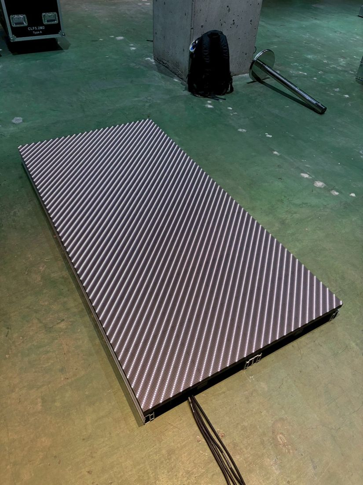
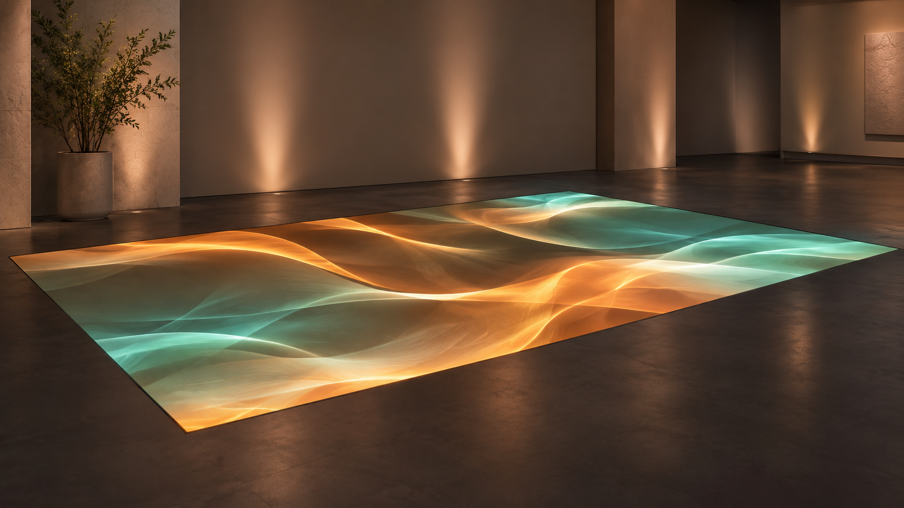

床のどこに映す？
見せたい範囲、客席とカメラの位置、映像の向きを整理。
LED ↗EQUIPMENT / 47
フロアLEDディスプレイ
足元まで、映像の舞台に。
KEY SPECIFICATIONS
 画像を大きく見る ＋
画像を大きく見る ＋IN OUR FIELD

01 / ROLE & FLOW
実際の配線・端子構成は案件に合わせて決めます。
A FLOOR WITH A STORY

大きく見る ↗視線の先だけでなく、足元にも。
展示のテーマやステージの世界観を、床面の色・動きへ広げます。
見せ方と、使い方を一緒に。
観客の位置、歩行の有無、周囲の明るさを決めてから、支持方法や段差・端部の条件を、設計担当と確認します。
02 / BEFORE YOUR BRIEF
見せたい範囲、客席とカメラの位置、映像の向きを整理。
利用内容を共有し、支持構造・荷重・歩行条件を設計担当へ確認。
映像のつながり、画面ごとの割付、再生と制御の構成を確認。
03 / CHOOSING THE RIGHT TOOL
舞台や展示の床面にも映像を使いたいときに。壁面LEDとは違う見え方を生かし、上から見る場面と客席から見る場面を分けて考えます。
床用パネルでも、置くだけで歩行や物の設置が許可されるわけではありません。専用支持部材と設置条件の確認が必要です。旧CLF5.2やCLF-VXの仕様は流用しません。
メーカー資料はCLF5M2をCLF M2シリーズとして掲載しています。パネルだけで映像システムは完結しません。対応コントローラー、信号・電源配線、支持部材、端部処理を含めて範囲を整理します。人の動きに連動する演出は、必要な検出・制御構成を別に確認します。
寸法・重さ・消費電力はメーカーの公表値です（消費電力は 1 m² あたりの表記）。床に載せる荷重と回路容量は、本体の型式と仕様が確定するまで決めず、設営前に責任者へ相談します。
表示範囲と映像方向、観客・カメラ位置、人や物を載せる条件、既存パネルの型式・改定、制御機器、支持構造・電源・設置確認の担当をお聞かせください。本体・周辺機材・搬入出・設営・本番操作・撤去を分けて、必要な範囲を整理します。
04 / RELATED EQUIPMENT
DM2.6は壁面表示を検討する別機種です。